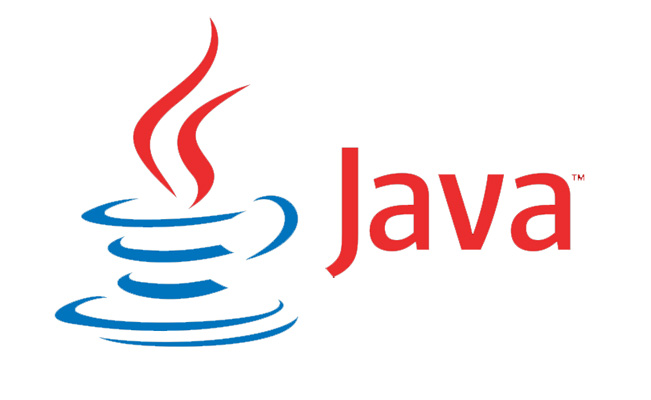
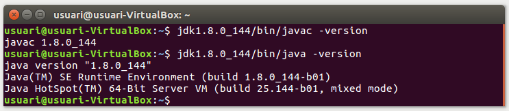

El Java Development Kit proporciona eines de desenvolupament per a la creació de programes JAVA.
Què aprendràs
- El procés de desnvolupament de programes amb tecnologia Java
- Compilar un programa a partir del codi font
- Executar un programa compilat
Descarrega el JDK
Trobarás el JDK oficial d'Oracle al següent enllaç:
✅ Comprova que s'ha descargado el archivo en la carpeta de baixades
Descomprimeix l'arxiu al teu directori personal
Abre el archivo descargado con el Gestor de Archivadores y extrae el contenido en tu Carpeta Personal
Prueba el compilador y el intérprete
Comprueba que puedes ejecutar el compilador y el intérprete, haciendo que muestren su versión. Para ello, abre un terminal y ejecuta los siguientes comandos:
1 - Ejecuta el compilador con la opción que muestra la versión
jdk1.8.0_144/bin/javac -version
✅ Comprueba que muestra la versión
2 - Ejecuta el intérprete con la opción que muestra la versión
jdk1.8.0_144/bin/java -version
✅ Comprueba, de nuevo, que muestra la versión

Vamos a realizar ahora una pequeña aproximación al proceso de desarrollo que hemos visto anteriormente.
En resumen, el proceso de desarrollo es el siguiente:
- Escribimos el código fuente en un archivo de texto
- Compilamos el código fuente mediante el compilador
javac, que lo traduce a bytecode. - Ejecutamos el programa compilado con la Java Virtual Machine
java

Escribe el código fuente del programa "Hola Mundo"
Abre un editor de texto sin formato, como gedit, y crea un archivo en tu carpeta personal, con el nombre HelloWorldApp.java
Copia el siguiente código y guarda los cambios:
class HelloWorldApp {
public static void main(String[] args) {
System.out.println("Hello World!"); // Display the string.
}
}Compila el archivo con el código fuente
Usa el siguiente comando en el terminal para compilar el archivo de código fuente que acabas de crear:
jdk1.8.0_144/bin/javac HelloWorldApp.java
Este comando habrá generado un fichero llamado HelloWorldApp.class con el bytecode de tu programa. Compruébalo.
Ejecuta el programa con la Máquina Virtual de Java
jdk1.8.0_144/bin/java HelloWorldApp
¡Felicidades! ¡Has ejecutado tu primer programa!